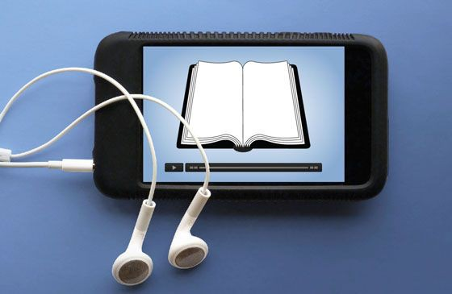

How does technology improves reading skills
Technology evolves in our society which has a big impact in our daily lives.
Nowadays technology also helps us in many ways such as improving our reading skills.
In this article we will tackle how technology will improve our reading skills.
Using technology you have accessibility and engagement in reading your favorite stories.
Accessibility to everyone because in technology there are some special features like text-to-speech
features and adjustable settings to make reading accessible for people with visual impairments or
learning disabilities. Technology can also help in enhancing your reading comprehension. Lastly,
technology can make reading more fun and engaging.
- Tips on how to improve your reading skills using technology
- Set aside distraction and focus in reading
- Explore online libraries.
- Customize your reading experience.
- Explore audiobooks.
- Embrace note taking and highlighting.
- Making reading be part of your daily life.

Technology improves our reading skills by making it easier for everyone to read through special features like reading aloud and settings designed for people with vision or learning difficulties. Additionally, it enhances our understanding of what we read and makes the reading experience more enjoyable and engaging.